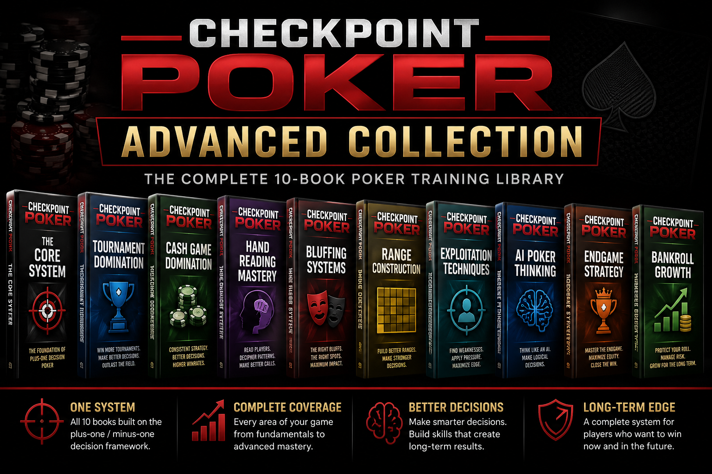

Most Players Guess. Strong Players Read.
Many poker players treat hand reading like magic. They hope to put someone on a hand and then act with confidence.
Real hand reading works differently.
Strong players build information one decision at a time. Every action narrows possibilities. Every bet reveals information. Every check, call, raise, or fold helps define the story an opponent is telling.
Stop Looking For Exact Hands Too Early
One of the biggest mistakes in poker is trying to identify an exact hand before the information supports it.
Instead of asking whether an opponent has one specific holding, Hand Reading Mastery teaches you to think in ranges, actions, and decision paths.
- What hands are possible?
- What hands are unlikely?
- What hands would take this line?
- What does this bet size represent?
- What pressure is being applied?
- What range remains after this action?
When you stop guessing and start narrowing, poker becomes clearer.
What You Will Learn
This book applies the Checkpoint Poker decision framework to one of the most important skills in poker: understanding what your opponents can have and what their decisions are telling you.
You will learn how to:
- Read betting patterns more logically
- Narrow ranges street by street
- Understand what different actions reveal
- Use board texture to improve your reads
- Identify pressure points in a hand
- Spot contradictions in an opponent's story
- Separate real strength from represented strength
- Avoid emotional calls based on curiosity
- Make better decisions with incomplete information
The Checkpoint Approach To Hand Reading
Checkpoint Poker focuses on decision quality. Hand reading is not separate from that system. It is part of the decision process.
Every action creates a checkpoint. When an opponent checks, bets, calls, raises, or folds, that action changes the hand-reading landscape.
The question becomes simple: what does this decision make more likely, and what does it make less likely?
You are not trying to be perfect. You are trying to make fewer blind guesses and more structured decisions.
Who This Book Is For
This book is for players who feel lost when trying to read opponents.
It is for players who call because they are curious, fold because they are confused, or bluff because they do not understand what their opponent's range looks like.
If you already understand the Core System, Hand Reading Mastery will help you apply plus-one and minus-one thinking to one of poker's most important skills.
Buy Checkpoint Poker: Hand Reading Mastery View The Core SystemReady For The Complete Checkpoint Poker System?
Hand Reading Mastery is one part of the complete Checkpoint Poker library. The Advanced Collection gives you the full system across tournaments, cash games, hand reading, bluffing, ranges, exploitation, AI-style thinking, endgame strategy, and bankroll growth.

The Advanced Collection includes:
- Checkpoint Poker: The Core System
- Checkpoint Poker: Tournament Domination
- Checkpoint Poker: Cash Game Domination
- Checkpoint Poker: Hand Reading Mastery
- Checkpoint Poker: Bluffing Systems
- Checkpoint Poker: Range Construction
- Checkpoint Poker: Exploitation Techniques
- Checkpoint Poker: AI Poker Thinking
- Checkpoint Poker: Endgame Strategy
- Checkpoint Poker: Bankroll Growth